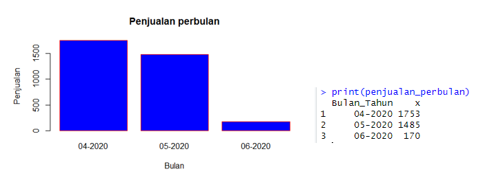
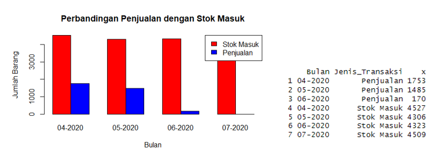
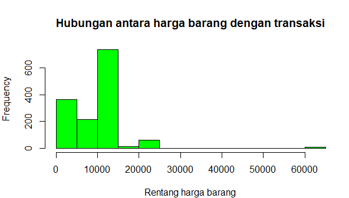

Project: Eksplorasi Data Ritel menggunakan R
DQ-pedia merupakan salah satu perusahaan e-commerce yang ada pada DQ Universe. DQ-pedia sedang gencar memperbanyak mitra berupa warung kecil di berbagai daerah melalui strategi meningkatkan pendapatan dan melakukan analisis untuk menjamin ketersediaan stok barang. Tahap pertama proses ini yaitu melakukan load data untuk mengecek data yang akan di olah. Setelah itu, dilakukan analisis. Data yang akan dianalisis yaitu mengenai "penjualan dalam bulan April hingga Juli" melalui penggunaan fungsi agregasi count, sum, dan average pada data. Kemudian data tersebut di visualisasikan dengan menggunakan chart.
Berdasarkan chart diatas, penjualan bulan April hingga Juni mengalami penurunan. Pada bulan April, penjualan sejumlah 1753 barang. Bulan Mei, sejumlah 1485 barang, dan bulan Juni sejumlah 170 barang.
Selanjutnya, dilakukan analisis untuk membandingkan stok barang masuk dengan penjualan. Hasil dari analisis ini adalah jumlah stok barang yang masuk rata-rata sekitar 4000 barang, sedangkan yang terjual sekitar 1000 barang di bulan April dan Mei.
Hasil dari chart diatas, harga barang yang paling diminati yaitu Rp10000 - Rp15000, kemudian harga barang dibawah Rp5000.
Dataset : https://dqlab.id/